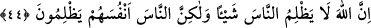

zikretmiştir.
Bir tabib bir hastanın iyileşmeyeceğini anlayınca onunla uğraşmaz, iyileşemiyor diye
kendini üzmez. İşte akıl kriterine göre müşrikler artık felâha eremeyecek bir duruma
geldikleri zaman onlardan uzaklaşmak ve yalanlamaktaki ısrarlarına tepki göstermemek,
etkilenmemek gerekir.
Kisrâ’nın veziri Yûnân der ki: “Beş şey zâyi olmuştur: Çorak arâziye yağan yağmur,
güneş ışığında yakılan kandil, kör bir adamın yanındaki güzel bir kadın, hastanın
yanındaki güzel yemek, kıymetini bilmeyenler nezdinde akıllı adam.”
44. Şüphesiz Allah insanlara hiç zulmetmez, fakat insanlar kendi kendilerine
zulmediyorlar.
“Şüphesiz Allah insanlara hiç zulmetmez.” Cenâb-ı Hak kullarına hiçbir konuda
zulmetmez, yâni onların akıllarını ve hislerini almaz. “fakat insanlar kendi kendilerine
zulmediyorlar.”
His ve akıl Cenâb-ı Hakk’ın kudretinin âyet ve alâmetlerini idrâk etme vâsıtalarıdır.
Onları oyun ve eğlencede kullanma. Onlardan elde edilecek menfaat ve faydalar elden
gider, zarardan başka faydaları olmaz.
Göz O’nun kudretinin âyetlerini görmek içindir
Kulak Hazret’in haberlerini, emirlerini dinlemek içindir
Hakkı görmeyen ve hak sözü işitmeyen kimse
Kördür, sağırdır, belki onlardan daha beterdir
et-Te’vîlâtü’n-Necmiyye’de şöyle denilir: “Şüphesiz Allah insanlara” doğru yolu
bulma, ve îmân feyzini kabul etme istîdâdlarından mahrum kılmak, sonra da onları
hidâyete ve îmâna mecbûr bırakmak sûretiyle “hiç zulmetmez,” bilâkis Allah’ın
insanları kendisi üzerine yarattığı fıtrat ile îmânı kabul etme ve hidâyet istîdâdını onlara
verir. “fakat insanlar” şer’î emir ve yasaklara karşı gelerek fıtrî istîdâdlarını bozarak
“kendi kendilerine zulmediyorlar.”
Bu âyet göstermektedir ki kulun kesbi vardır. Cebriyye’nin iddia ettiği gibi seçme
hürriyeti/ihtiyâr tamamen elinden çekilip alınmamıştır. Başına gelen her şey kendi
tarafından gelir.
Mesnevî’de şöyle denilmektedir:
Eski zamanlarda bir âşık vardı.
Ahdinde duran, verdiği sözü tutan bir âşıktı.
Yıllarca ay yüzlü sevgilisine gönül vermiş,